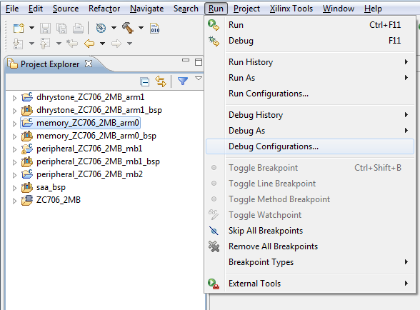
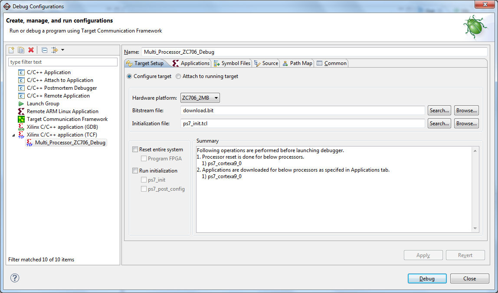
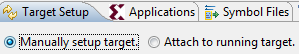
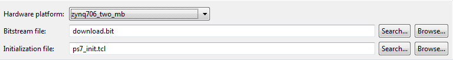
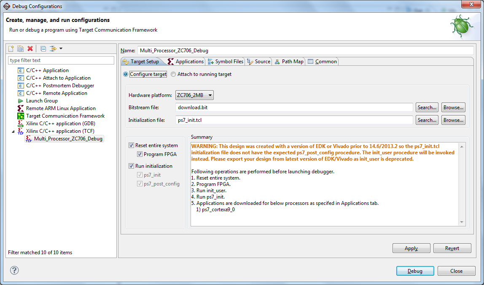
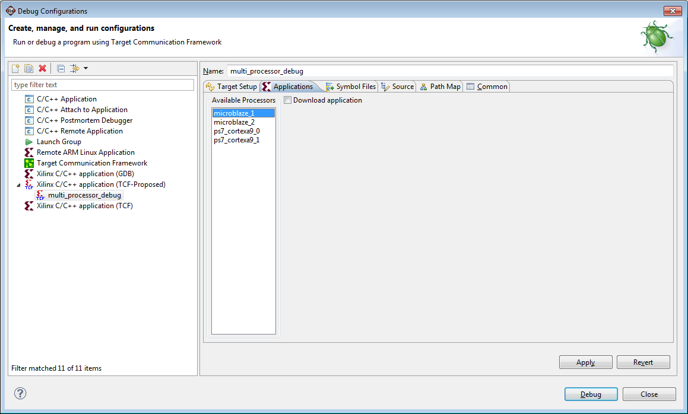
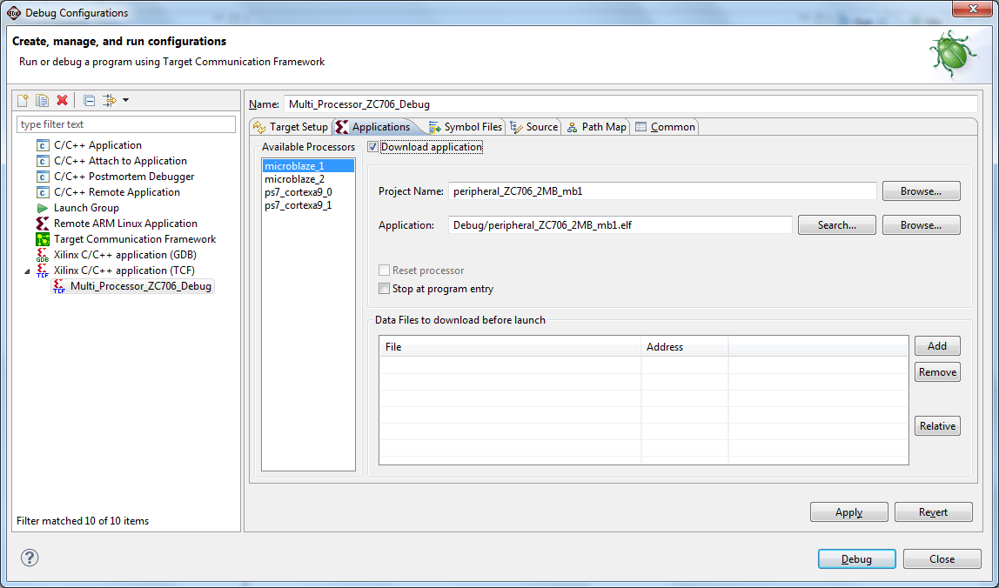
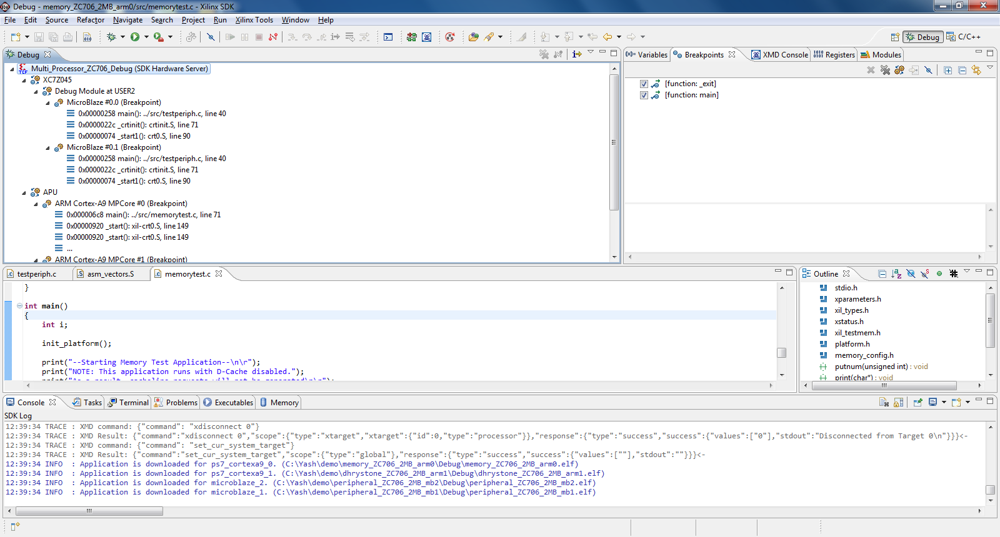

Multi-Processor Debugging with System Debugger (TCF)
You can debug multiple processors simultaneously with a single System Debugger (TCF) debug configuration.
- Create application projects for the processors included in the design.
- Select any application and click Run > Debug Configurations.

Working in the Debug Configurations Window
- In the Debug Configurations window, left panel, select the configuration type Xilinx C/C++ application (TCF) and click the New button.
- Name the configuration "Multi_Processor_ZC706_Debug."

Debug Configurations Window, Target Setup Tab
- In the Target Setup tab, select the appropriate setup.
- Select the Manually setup target radio button if you want to initialize and download ELF files.
- Select the Attach to running target radio button if you want to connect to the target and display the current status of all the processors. With this selection, no resets or initializations are performed on the target before launching the debugger.

- To automatically populate bitstream and initialization files: from the Hardware platform drop-down list, select the appropriate hardware platform.
Note: Use the Browse buttons if you wish to select different bitstream and initialization files.

- If you wish to reset the entire system, enable the Reset entire system checkbox in the Debug Configurations window.
- If you also wish to program the bitstream after system reset, enable the Program FPGA checkbox.
- Enable the Run Initialization checkbox to run the PS initialization file.
Note: The Summary window displays a summary of System Debugger (TCF) operations.

Debug Configurations Window, Applications Tab
- Select the Applications tab to display all processors available to the selected hardware platform.

- Select the Download Application checkbox if you want to download the application to the selected processor.
Note: If a single project exists for the processor, the Project Name and Application Name fields populate automatically when you select the Download Application checkbox. If more than one project exists for the processor, you must make the Project Name selection manually.
- Select the Stop at program entry checkbox if you want to stop the processor before application main().

- Click the Debug button to launch multi-processor debugging.

 Debug overview
Debug overview

Refer to the following sections for information about installation, setting up the environment, and debugging applications using the System Debugger (TCF) integrated SDK: